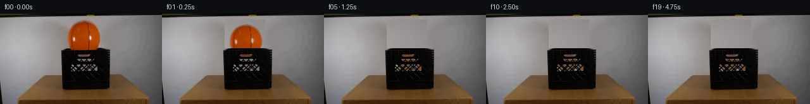

![首帧]()

Round 00
2026-11-05T02:18:36.125156+00:00像素候选变化代码 +291/−0inspection 更新
pixels 958be85fdc408dae · code b68071dc7521db6d
查看本轮 generate.py 真实 diff
--- previous/generate.py
+++ current/generate.py
@@ -0,0 +1,291 @@
+"""PixelWorld vision-input generation — case_0014.
+
+An orange inflatable basketball is released over a black plastic crate and
+falls into it, bouncing once or twice before settling. Locked-off camera.
+
+All pixels are produced locally with numpy/PIL:
+ * background plate: polynomial wall reconstruction + dark rim fill;
+ * above-rim ball: the frame-0 ball pixels themselves (RGBA sprite) shifted;
+ * inside-crate ball: analytic shaded sphere seen only through perforations.
+Frame 00 is the untouched first_frame.png.
+"""
+from pathlib import Path
+import numpy as np
+from PIL import Image, ImageDraw, ImageFont
+import artifact_io
+
+HERE = Path(__file__).parent
+rng = np.random.default_rng(14)
+
+W, H, N, DT = 256, 144, 20, 0.25
+CX, CY0, R = 132.0, 40.0, 24.5 # ball frame-0 geometry (px)
+CY_FLOOR = 92.0 # resting ball centre
+G, E = 140.0, 0.40 # gravity px/s^2, restitution
+
+src = np.asarray(Image.open(HERE / 'first_frame.png').convert('RGB'))
+assert src.shape == (H, W, 3)
+
+# ---------------------------------------------------------------------------
+# 1. Wall model: degree-3 polynomial in (x, y) fitted to clean wall samples.
+# ---------------------------------------------------------------------------
+yy, xx = np.mgrid[0:H, 0:W]
+wall_sample = np.zeros((H, W), bool)
+ys_w = np.arange(9, 93)
+for y in ys_w:
+ wall_sample[y, 2:93] = True # left of crate
+ wall_sample[y, 178:254] = True # right of crate/table edge
+# remove anything non-neutral (stray warm pixels)
+sr, sg, sb = src[..., 0].astype(int), src[..., 1].astype(int), src[..., 2].astype(int)
+neutral = (np.abs(sr - sg) < 14) & (np.abs(sg - sb) < 14)
+wall_sample &= neutral
+
+ys, xs = np.where(wall_sample)
+X, Y = xs / 128.0 - 1.0, ys / 72.0 - 1.0
+A = np.stack([np.ones_like(X), X, Y, X*X, X*Y, Y*Y, X**3, X*X*Y, X*Y*Y, Y**3], 1)
+coef = np.stack([np.linalg.lstsq(A, src[ys, xs, c], rcond=None)[0] for c in range(3)])
+
+def wall_color(x, y):
+ X, Y = np.asarray(x) / 128.0 - 1.0, np.asarray(y) / 72.0 - 1.0
+ P = np.stack([np.ones_like(X), X, Y, X*X, X*Y, Y*Y, X**3, X*X*Y, X*Y*Y, Y**3], 0)
+ return np.clip(np.einsum('ck,kij->cij', coef, np.broadcast_arrays(*[P[i][None]
+ for i in range(10)])[0]) if False else
+ np.stack([P.T @ coef[c] for c in range(3)]), 0, 255)
+
+# residual report (numeric self-check, no image viewing)
+pred = np.stack([A @ coef[c] for c in range(3)], 1)
+resid = np.abs(pred - src[ys, xs]).mean()
+print(f'wall fit mean abs residual on samples: {resid:.2f}')
+
+# ---------------------------------------------------------------------------
+# 2. Background plate: erase ball (wall patch y9-54, rim fill y55-57).
+# ---------------------------------------------------------------------------
+plate = src.copy()
+
+gx, gy = np.meshgrid(np.arange(99, 163), np.arange(9, 55))
+Xp, Yp = gx / 128.0 - 1.0, gy / 72.0 - 1.0
+Pp = np.stack([np.ones_like(Xp), Xp, Yp, Xp*Xp, Xp*Yp, Yp*Yp,
+ Xp**3, Xp*Xp*Yp, Xp*Yp*Yp, Yp**3], -1)
+fill = np.clip(Pp @ coef.T, 0, 255)
+fill += rng.normal(0, 1.1, fill.shape) # match camera grain
+plate[gy, gx] = np.clip(fill, 0, 255)
+
+# rim rows 55-57: flat dark plastic sampled from undamaged stretches
+for y in (55, 56, 57):
+ cand = np.concatenate([src[y, 98:109].reshape(-1, 3),
+ src[y, 158:172].reshape(-1, 3)])
+ dark = cand[cand.sum(1) < 80]
+ col = np.median(dark, 0)
+ strip = np.broadcast_to(col, (50, 3)).copy()
+ strip += rng.normal(0, 1.0, strip.shape)
+ plate[y, 109:159] = np.clip(strip, 0, 255)
+
+# ---------------------------------------------------------------------------
+# 3. Real ball cap sprite (the actual frame-0 ball pixels + alpha).
+# ---------------------------------------------------------------------------
+dist = np.sqrt((xx - CX) ** 2 + (yy - CY0) ** 2)
+d_red = sr - np.maximum(sg, sb) # red-over-neutral contrast
+alpha = np.clip((d_red - 4.0) / 70.0, 0, 1)
… diff truncated; 204 more lines …